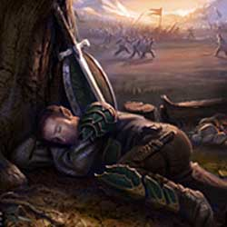

La guarigione con metodi naturali
Senza
l’aiuto della magia devono essere utilizzati metodi di cura delle ferite che
siano naturali, varie competenze possono essere utili e possono essere
utilizzati prodotti non magici come unguenti bende sterili ecc....

I punti ferita persi si recuperano normalmente con il riposo. Il riposo può essere comune o totale.
RIPOSO COMUNE - Affinché una creatura si
consideri in condizioni di riposo comune occorre che la stessa rispetti per 24
ore le seguenti condizioni:
* Non effettui alcuna
azione stancante (ossia un'azione che preveda l'accumulo di almeno un punto
fatica).
* Non soffra per il digiuno o la disidratazione.
* Non effettui il lancio di alcun incantesimo, né utilizzi alcun potere speciale
od oggetto magico per l'attivazione dei quali (nonostante non sia richiesta la
concentrazione) il personaggio deve pronunciare parole od effettuare movimenti
assimilabili ai componenti verbali e somatici degli incantesimi.
* Non utilizzi alcuna competenza non relativa alle armi.
* Dorma per almeno 8 ore consecutive nell'arco delle 24 ore.
* Non si trovi esposto a condizioni ambientali avverse (restare sotto la pioggia
o all'agghiaccio, ad esempio, non consente un adeguato riposo).
* Trascorra tale periodo in posizione relativamente comodità, senza effettuare
attività complesse che richiedono sforzo od attenzione particolare per essere
compiute. In particolare, potranno ritenersi compatibili con una situazione di
riposo regolare le seguenti attività: camminare tranquillamente lungo un
sentiero, cavalcare in pianura o lungo una strada battuta, effettuare
comodamente un turno di guardia. Non saranno considerate, invece, compatibili
con una situazione di riposo regolare le seguenti attività: camminare senza
seguire comodamente un sentiero, cavalcare in zone impervie (foreste, colline,
montagne) e/o fuori da strade battute, effettuare una qualsiasi attività
lavorativa, effettuare una qualsiasi attività di studio o di ricerca.
Ogni
creatura recupera 1 punto ferita + 1 punto ferita
supplementare per ogni due dadi vita arrotondati per difetto ogni giorno intero (24 ore) passato
in condizioni di riposo comune. In base a questa regola è possibile seguire questa
tabella :
| Dadi Vita | Totale dei punti ferita recuperati al giorno di riposo |
| fino ad 1 | 1 punto ferita al giorno |
| 2 - 3 | 2 punti ferita al giorno |
| 4 - 5 | 3 punti ferita al giorno |
| 6 - 7 | 4 punti ferita al giorno |
| 8 - 9 | 5 punti ferita al giorno |
| 10 - 11 | 6 punti ferita al giorno |
| 12 - 13 | 7 punti ferita al giorno |
| 14 - 15 | 8 punti ferita al giorno |
| 16 - 17 | 9 punti ferita al giorno |
| 18 - 19 | 10 punti ferita al giorno |
| 20 ed oltre | 12 punti ferita al giorno |
A differenza dei Dadi Vita, i Livelli di Esperienza non aiutano a rigenerare i punti ferita con il riposo. Per cui molti personaggi indipendentemente dal loro livello si considereranno creatura da 1 dado vita.
RIPOSO TOTALE -
Affinché una creatura si consideri in condizioni di riposo totale (solo le
creature con intelligenza almeno pari a Low [5] possono decidere di effettuare
riposo totale), oltre a rispettare le suddette regole per il riposo comune,
occorre che la stessa trascorra 24 ore rispettando le seguenti ulteriori condizioni:
* Non effettui alcun tipo di
attività se non quella di dedicarsi completamente al riposo.
* Disponga di cibo e bevande tali che da poter essere considerato ben nutrito ed
idratato.
* Disponga di un comodo giaciglio o, comunque, di una posizione sulla quale
adagiarsi che possa considerarsi per la creatura una postazione comoda (si pensi
ad un comodo letto per un umano od un semi-umano).
* Possa riposare in un luogo chiuso e ben riscaldato, dove vi sia una
temperatura costante ed adeguata (per tale motivo si consideri nella normalità
dei casi un personaggio che si riposi senza il riparo almeno di una tenda, senza
il calore di un fuoco e senza la comodità di un sacco a pelo, non potrà
effettuare riposo totale ma solo riposo comune).
Ogni creatura che si trova in una posizione di riposo totale recupera 1 punto
ferita supplementare in più rispetto a quanti ne avrebbe ottenuti in 24 di
riposo comune. In una situazione di riposo totale, dunque, chi si trova sotto
gli effetti di questa magia recupererà 4 punti ferita ogni 24 ore.
L'arte di curare le ferite (healing)
Chi ha la competenza healing può utilizzare questa competenza in vari importanti occasioni. In ogni caso, per poter utilizzare questa competenza un personaggio deve disporre di due strumenti indispensabili:
A) Gli attrezzi chirurgici: si tratta di un set di attrezzi e strumenti medici per le varie occasioni, esistono set di tipo differente e tutti possono essere riutilizzati. I più comuni sono:
Strumenti
medici rudimentali: costo 10 gold, peso 5 libbre,
malus di -1 al check.
Strumenti medici comuni: costo 30 gold, peso 4 libbre,
nessuna
modifica al check.
Strumenti medici avanzati: costo 150 gold, peso 4 libbre,
bonus
di +1 al check.
B)
I bendaggi sterili: per
utilizzare la competenza healing occorrono necessariamente i bendaggi e
gli strumenti medici base. Comunemente un set di bende sterili ( composto di garze, ferretti,
ago e filo ecc…) che include 10 bendaggi ha un costo minimo pari a 1 moneta
d'oro ed un peso pari a 2 libbre.
Ogni volta che è richiesto
l'uso dei bendaggi, se un medico
non dispone di quelli sterili, ma se li procura di fortuna (ad esempio
strappando vestiti) potrà utilizzare la
competenza ma otterrà una penalità di -2 alla prova di healing. Inoltre
ogni volta che sono utilizzati bendaggi non sterili la
vittima ha una possibilità pari ad un risultato di 1-2 su 1d10 di infettarsi e
subire una malattia (vedi sotto).
Esistono
due modalità per curare le ferite subite con la competenza healing:
1)
Primo
intervento medico
su ferite fresche applicando i bendaggi, tamponando le ferite, facendo eventuali
saturazioni, ecc... Un medico può effettuare un tentativo di pronto soccorso,
effettuando una prova sulla competenza healing. Qualora la prova sulla
competenza ha successo il ferito recupererà 1 punto ferita per ogni 3 punti,
per difetto, in cui il medico ha superato la prova di healing. Il medico
dovrà utilizzare 2 bendaggi sterili e impiegherà 1 turno ad
effettuare queste cure (qualora sia interrotto non potrà continuare e la prova
si considererà fallita). Una creatura ferita può usufruire di un solo tentativo
(indipendentemente dal suo esito) di primo intervento medico, non potrà
usufruire di altri interventi fino a che non sia totalmente guarita e
comunque non prima che siano trascorsi 3 giorni dall'ultimo pronto
soccorso. Se il medico effettua un fallimento critico (tirando un 20
naturale)
il paziente oltre a non poter riottenere per almeno 3 giorni un pronto soccorso
subirà 1 punto ferita
2)
Tenere
sotto cura un ferito.
Il medico potrà tenere sotto osservazione personaggi feriti permettendo loro di
guarire più velocemente. Solo coloro che si trovano in
riposo totale possono usufruire di queste attenzioni del medico. Un
medico può tenere sotto osservazione un ferito per numero di lingue che può
parlare in base all’intelligenza. Indipendentemente dal numero dei feriti, il
medico impiegherà tutta la sua giornata lavorativa nel compiere questa attività.
Non occorre alcuna prova sull'abilità healing per tenere sotto cura i
feriti. Un personaggio sotto cura recupererà 1
punto ferita addizionale
al giorno oltre a quelli che avrebbe recuperato con il riposo. Il medico
dovrà utilizzare 1 bendaggio per ogni ferito di cui si prende cura nella
giornata. Se il medico si prende cura del ferito in una infermeria costui farà recuperare a coloro si trovano sotto
cura
2
punti
ferita
addizionali
anziché uno.
Infermeria
medica
L’infermeria
medica è il luogo migliore ove prendersi cura dei feriti, nell’infermeria
oltre ad esserci posti letto con coperte e cuscini vi sono tutti i ferri
chirurgici necessari ad operare, acqua pulita, bracieri per sterilizzare
ecc… ecc… Il costo medio per arredare una infermeria è di 150 monete
d’oro per posto letto e richiede un costo di mantenimento pari a 5
monete d'oro al mese. Se un medico opera in tale luogo ottiene una bonus
di +1 a tutti i suoi check di healing.
La
cura delle malattie
Chi ha la competenza healing può tenere sotto cura un malato (in caso di contatto aereo rischia però il contagio). In ogni fase di una malattia il medico deve poter visitare per almeno 1 ora l'ammalato e stabilire una terapia. Se riesce in una prova di healing, con una penalità ulteriore di -2, darà all'ammalato un bonus di +1 al tiro salvezza al termine della fase in cui ha effettuato la visita (sempre che sia previsto), altrimenti avrà dato consigli inutili in quel caso concreto.
Quando un personaggio raggiunge 0 o meno punti ferita cade a terra in stato comatoso, da quel momento in poi perderà un punto ferita per round. Qualsiasi personaggio potrà tentare di prendersene cura e fermare la perdita di punti ferita. Lo potrà fare impiegando un intero round nel quale il personaggio perderà comunque il punto ferita, per riuscirci dovrà avere 2 bendaggi e dovrà superare una prova di intelligenza a – 3 di penalità. Se sbaglia si renderà conto di non essere in grado ad interrompere lo stato comatoso. Un personaggio con la competenza healing, invece, ci riuscirà automaticamente. Appena un personaggio raggiungerà i –10 punti ferita sarà considerato definitivamente morto. In caso di successo verrà solo fermata la perdita di punti ferita , ma il personaggio resterà in coma, perdendo 1 punto ferita al giorno. Per tornare ad 1 punto ferita e svegliarsi dovrà ricevere una qualsiasi cura magica oppure un intervento chirurgico.
Se viene curato
magicamente si sveglierà ad 1 punto
ferita, ma ulteriori cure magiche non avranno effetto, resterà dunque per 24
ore molto debole, non potrà combattere o lanciare incantesimi, potrà parlare
e fare piccoli spostamenti. Dopo le 24 ore potrà recuperare altri punti ferita
magicamente o naturalmente.
Se si sottopone ad intervento chirurgico, il medico dovrà superare un check di healing , con una penalità pari al valore di punti ferita negativi ai quali il personaggio si è fermato. In caso di riuscita il personaggio passerà ulteriormente in coma 1d10 giorni, il giorno immediatamente successivo si sveglierà ad 1 punto ferita. Se sbaglia il check il personaggio morirà sotto i ferri durante l’operazione. Per effettuare questo tipo di operazione è necessario adoperare 5 bendaggi, inoltre il medico deve disporre necessariamente degli attrezzi chirurgici.
Quando una creatura subisce delle ferite esiste una possibilità che queste con il passare del tempo si infettino. Se, infatti, un personaggio ferito riposa o comunque non pulisce le ferite subite nel giro subite nel giro di un ora vi è il 10% di possibilità (1 su 1d10) che queste si infettino (una volta effettuato tale tiro questo non va ripetuto fino a che il personaggio non subisce nuove ferite).
Per pulire le ferite di un personaggio è necessario l'uso di 1 bendaggio sterile. Se chi le pulisce non ha la competenza healing costui dovrà superare una prova di intelligenza. Chi ha la competenza healing, invece, è in grado di pulire le ferite automaticamente senza che sia richiesto alcun tiro. La pulizia delle ferite è un'attività che richiede 1d8+2 round di lavoro a creatura.
Se le ferite si infettano il personaggio corre il rischio di ammalarsi. Deve infatti, superare un tiro salvezza contro raggio della morte. Se il tiro riesce avrà resistito all'infezione, se fallisce si sarà ammalato di una delle cosiddette malattie dei combattenti.
Vedi la sezione delle malattie (link) per determinare quale malattia dei combattenti subirà il personaggio.